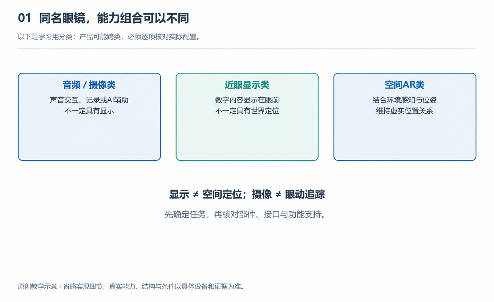

CHAPTER 01 认识对象INTERACTIVE FIELD GUIDE / 交互学习展台
整机观察 原创教学模型
拖动旋转 · Ctrl + 滚轮缩放
01 / DISTINGUISH
“智能”，不是一种固定配置。
这是三种学习用组合。产品可能跨类，
每一项能力都需要按具体型号核对。
此教学组合具备 此教学组合未配置
显示画面 ≠ 理解空间；接入 AI ≠ 自动补齐硬件。
02 / EXPERIENCE
阅读 1.1 ↗从一天的生活，辨认不同系统。
EXPERIENCE SKETCH 体验示意
音频摄像组合
在支持消息播报并获得权限的条件下，手机与眼镜配合把信息送到耳边。此组合没有显示器。
03 / CONNECT
阅读 1.5 ↗镜架之外，系统还在继续。
一个明确的教学假设
“帮我读一下这块路牌。”
假设眼镜采集图像，手机转发，云端解释，
最后由眼镜播放回答。观察网络变化的影响。
眼镜采集 / 播放
配对连接
手机转发 / 协同
互联网
云端识别 / 解释
此示例的在线解释链路可用；结果仍需核验。
04 / READ FURTHER
6 个小节 / 第一章回到书中，把观察变成理解。
展开第一章原书知识图 ＋

NEXT / 看懂结构
进入第二章 ↗